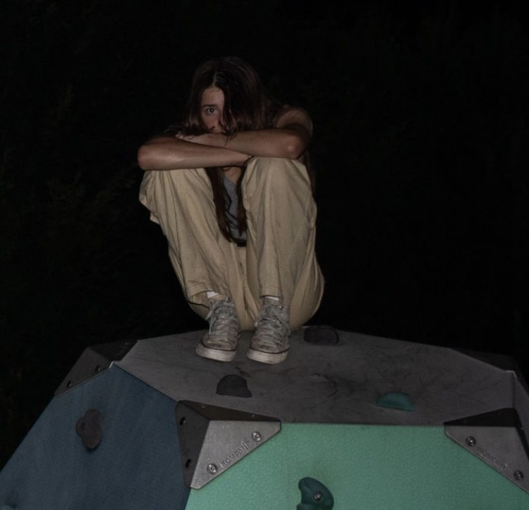
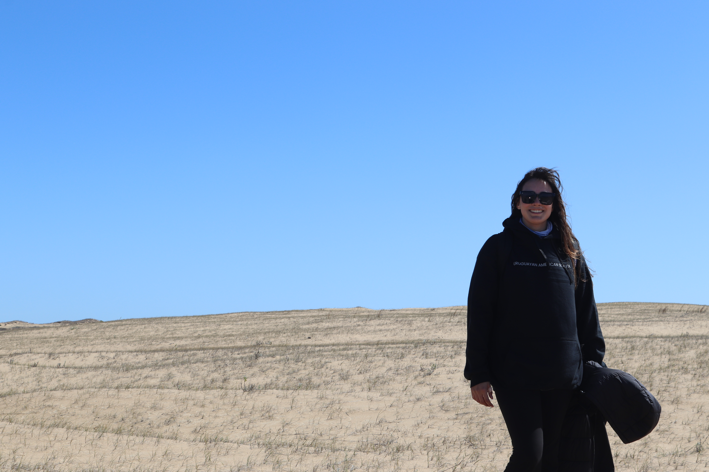

The People
So if you are confused about what this is, in this event I explain it. These are all the people tha have lore persay
Cursed Eternal
Danger Level: 3.3
Description
Sebas has been there since the beginning of everything. A red guy with horns approached him and made a deal. The deal was that Sebas would gain immortality at the cost of feeling extra pain..
Sightings of him have appeared throughout History, he started the witch trials and assasinated Lincoln using the skin of John Wilkes Booth. Also he really likes lean
Abilities
2: The Velho
Danger Level: 3.3
Description
Jesus
Abilities
- Walking on water
- Spawning fish
- Spawining Bread
- Turning people into fish(??)/li>
- Surviving for an unnatural time while nailed to a cross
- Respawning 3 days after dying
- Turning blood into wine and bread into flesh
The Detective
Danger Level: 3.3
Description
A detective with a 1/3 chance of solving a case.
Origin
(These are Alex's words verbatim) Alex was born in the island of maagascar, after the penguins dissapeared on a plane, it left the economy relations between madagascar and switzerland in pieces. The plane was carrying 100kg of swiss cheese just bought by the king of madagascar. Suspecting that this was a swuss plot to get their cheese back, the king assigned Alex to be the swiss ambassador's son in Uruguay. (If you understood any of that, nice one, because I didn't)
Abilities
The Skinwalker
Danger Level: 3.3

Description
Megan is a witch capable of shapeshifting
Abilities
- Turn into animals
- Kill people
The Activist
Danger Level: 3.6
Origin
An activist that is also really smart. He has the ability of comitting arson without the use of a lighter.
Abilities
- Planning
- Intelligence
- Burning
The Catalyst
Danger Level:?
Magicness:?
Description
Timo is capable making it easier for things to happen or take place. This can be seen as luck
Ailities
Mafia Leader
Danger Level:4
Magicness:1
Description
At first she might seem like a normal inocent girl, but she carries a secret, the secret is that she has nukes
Abilities
- Expert marksman
- Combat skills
- Nukes
- Helicopters
- Jets
- Guns
- Bombs
The Genie

Danger Level:4
Magicness:3
Description
Sofe is not a Genie that grants wishes, she can make holograms with light and mind control people to create the illusion that she is granting wishe. If she gains enouph power she will actually be able to make anything happen, which is not good since she desires to conquer the multiverse.
Abilities
- Mind Reading
- Mind Control
- Mind Manipulation
- Illuions
- Light
Behavious
She wants to control the multiverse of madness
The Actualizing Artist
Danger Level:2
Magicness:3
Description
A boy who calls himself Ethan, he is very good at drawing and enjoys art.
Abilities
Ethan is really good at drawing, someone gave him a tablet that allows him to will his creations into existance
The Biologist
Description
Eitoku has been a cat, a chicken, and an orangutan in his past lives. He is an expert biologist that remembers all his past lives. His orangutan form was killed because of deforestaion caused by the need of palm oil. Actually no that's wrong, his orangutan form was killed when someone threw palm oil at him in the form of nutella (he was allergic.).
Abilities
- Biology
- Feather Falling V
He can control his own biology, he decides what his cells do.
The Red Hero
Abilities
Martina is capable of defeating the super villains that want to ruin this world. She uses her favourite weapon and her elemental knowledge from genshin impact to defeat her oponents.
Chad
Danger Level:4
Magicness:0
Description
Chad awesome, he doesn't use magic because if he did he would be overpowered.
Abilities